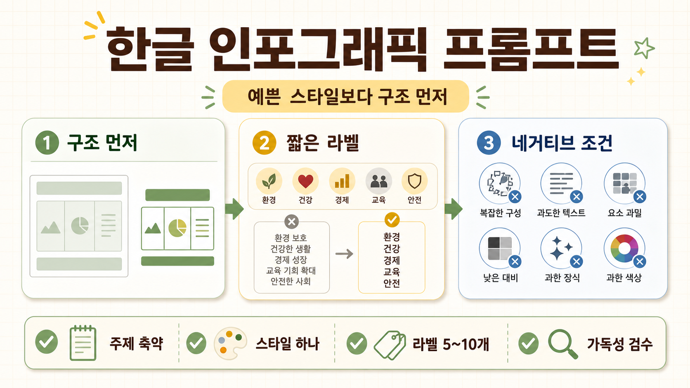
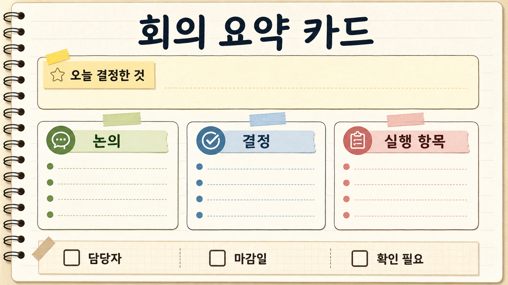
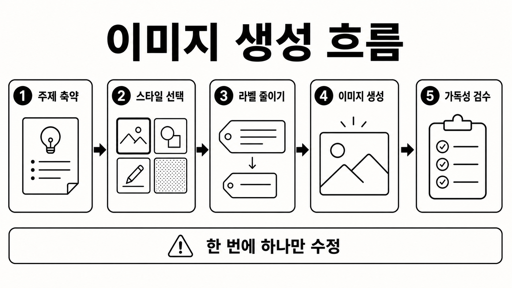
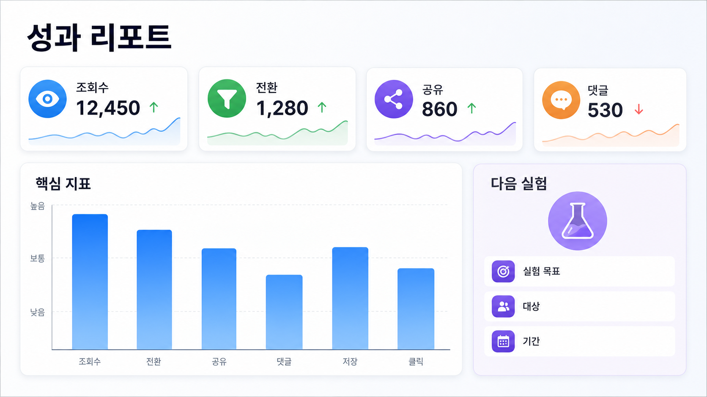
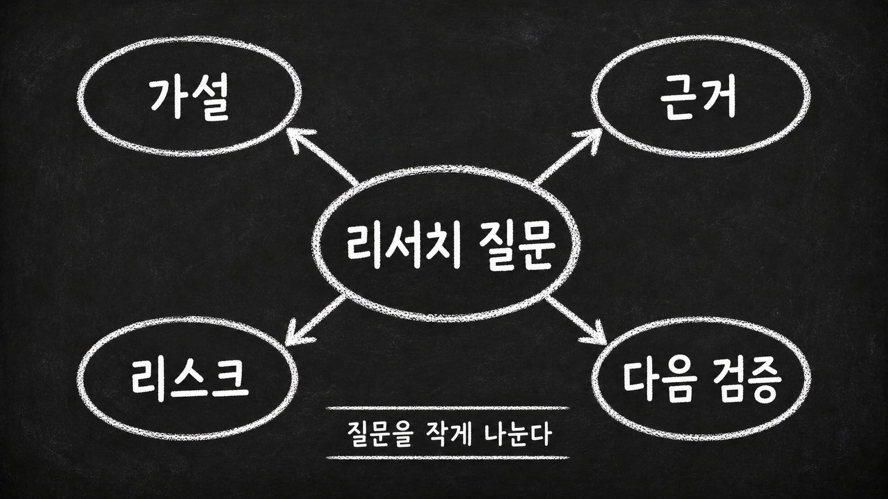
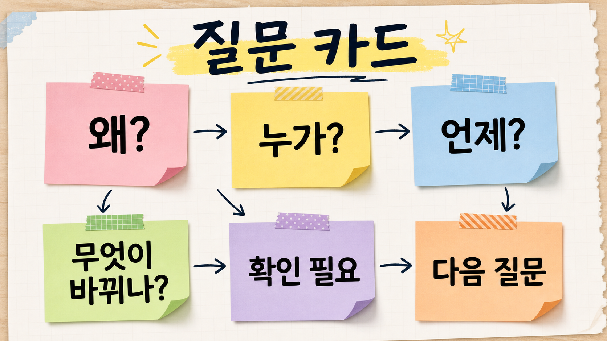

AI로 한글 인포그래픽을 만들 때, 예쁜 스타일보다 먼저 정해야 할 것
이미지 생성 모델로 인포그래픽을 만들면 첫 결과는 꽤 그럴듯해 보인다. 색감도 좋고, 카드도 예쁘고, 아이콘도 적당히 들어간다. 그런데 한글이 들어가는 순간 문제가 생긴다.
글자가 뭉개진다. 뜻 없는 한글 비슷한 기호가 생긴다. 제목은 잘리고, 라벨은 반복되고, 레이아웃은 예쁜데 정작 읽을 수 없다.
이때 많은 사람이 프롬프트에 더 멋진 스타일을 덧붙인다. “clean”, “modern”, “premium”, “minimal”, “dashboard” 같은 단어를 더 넣는다. 하지만 한글 인포그래픽에서 먼저 잡아야 할 것은 미감이 아니다.
한글 인포그래픽 프롬프트의 핵심은 예쁜 그림을 요청하는 것이 아니라, 모델이 읽을 수 있는 화면 구조를 좁혀주는 것이다.

왜 한글 인포그래픽은 자주 깨질까
이미지 모델은 글자를 정확히 조판하는 도구라기보다, 글자가 있는 장면을 그리는 도구에 가깝다. 그래서 문장이 길어질수록 실패 확률이 올라간다.
특히 인포그래픽은 텍스트가 많아지기 쉽다.
- 제목
- 부제
- 카드 제목
- 설명 문장
- 아이콘 라벨
- 숫자
- 주석
- 범례
- 체크리스트
이 모든 것을 한 장 안에 넣으려 하면 모델은 디자인과 텍스트를 동시에 맞춰야 한다. 영어보다 한글에서 더 자주 깨지는 이유도 여기에 있다. 글자 형태가 조금만 틀어져도 독자가 바로 알아차리고, 긴 문장일수록 작은 오류가 누적된다.
그래서 프롬프트의 목표는 “더 많은 정보를 넣기”가 아니라 “틀릴 수 있는 텍스트를 줄이기”여야 한다.
먼저 정해야 할 것은 세 가지다
한글 인포그래픽을 만들기 전에는 스타일보다 아래 세 가지를 먼저 정하는 편이 낫다.
1. 주제를 한 문장으로 줄인다
나쁜 입력은 이런 식이다.
우리 서비스의 기능과 장점과 고객 유형과 사용 흐름과 기대 효과를 한 장짜리 인포그래픽으로 만들어줘.좋은 입력은 더 좁다.
회의 내용을 한 장짜리 요약 카드로 정리한다.주제가 길면 이미지도 산만해진다. 한 장의 이미지는 하나의 질문에만 답해야 한다.
2. 산출물 유형을 고른다
“인포그래픽”은 너무 넓은 말이다. 실제로는 아래 중 하나를 골라야 한다.
| 만들고 싶은 것 | 추천 스타일 | 이유 |
|---|---|---|
| 한 장짜리 요약 카드 | Core Notes / Study Sheet | 텍스트 밀도 조절이 쉽다 |
| 단계 설명 이미지 | IKEA Manual Style | 순서형 설명이 또렷하다 |
| KPI/리포트형 시각화 | Dashboard Style | 숫자와 블록 구성이 안정적이다 |
| 구조도/관계도 | Chalkboard Concept Map | 개념 간 연결을 보여주기 좋다 |
| 분류 체계 | Periodic Table Style | 유형과 카테고리를 정리하기 좋다 |
| 아이디어 메모 카드 | Sticky Notes Collage | 브레인스토밍과 질문 묶음에 맞다 |
| 지식 지도 | Mind Map + Atlas Map | 큰 주제와 하위 개념의 관계를 보여준다 |
처음이라면 Core Notes / Study Sheet부터 시작하는 것이 가장 안전하다. 절차 설명은 IKEA Manual Style, 숫자 중심 리포트는 Dashboard Style, 관계도는 Chalkboard Concept Map이 낫다.
3. 문장이 아니라 라벨을 쓴다
이미지 안에 넣을 텍스트는 문장보다 라벨이 좋다.
나쁨: 회의 내용을 자동으로 요약하고 실행 항목을 정리합니다
좋음: 회의 요약 / 실행 항목 / 담당자 / 마감일긴 설명은 이미지 바깥의 본문에서 하면 된다. 이미지는 구조를 보여주고, 본문은 해석을 붙인다.
공통 프롬프트 구조
기본 형식은 이렇게 잡을 수 있다.
[TOPIC], [INFOGRAPHIC TYPE], [LAYOUT], [VISUAL ELEMENTS], [TEXTURE], [COLOR PALETTE], [STYLE], high readability, clean composition, no watermark, no clutter, no blurry text한글이 들어간다면 끝에 이 문구를 붙인다.
Korean typography, legible Hangul labels, crisp Hangul text, no gibberish letters, no broken Hangul, no distorted typography네거티브 프롬프트도 같이 둔다.
no watermark, no logo, no blurry text, no clutter, no messy background, no photorealistic scene, no extra paragraphs, no distorted typography, blurry text, illegible text, gibberish letters, low contrast, cropped text, duplicated labels, distorted icons이 문구가 모든 문제를 해결하지는 않는다. 그래도 모델에게 “이 이미지는 텍스트 가독성이 중요한 산출물”이라는 신호를 준다.
예시 1. 회의 요약 카드
상황
회의 내용을 긴 회의록이 아니라 한 장짜리 요약 카드로 보여주고 싶다. 핵심 논의, 결정, 실행 항목이 구분되어야 한다.
추천 스타일
Core Notes / Study Sheet

프롬프트
A clean core notes infographic about a meeting summary card, study sheet layout, title area, one-line summary box, three organized sections for discussion, decisions, and action items, small checklist blocks, highlighted keywords, sticky note accents, organized margins, warm off-white paper texture, neat educational composition, Korean typography, legible Hangul labels, crisp Hangul text, no gibberish letters, no broken Hangul, no distorted typography, high readability, no watermark, no clutter, no blurry text.화면에 넣을 짧은 라벨
제목: 회의 요약
핵심: 오늘 결정한 것
논의
결정
실행 항목
담당자
마감일사용 메모
요약 카드는 가장 범용적인 인포그래픽이다. 다만 회의록 전문을 이미지 안에 넣으려 하지 말고, 본문에는 요약을 쓰고 이미지는 섹션 구조만 보여주는 편이 낫다.
예시 2. 작업 흐름 설명서
상황
AI 이미지 생성 작업의 순서를 설명하고 싶다. 처음 쓰는 사람도 “무엇을 먼저 해야 하는지” 알 수 있어야 한다.
추천 스타일
IKEA Manual Style

프롬프트
A minimalist IKEA manual style infographic about an AI image generation workflow, numbered steps, simple icons, clean instructions, monochrome line art, clear spacing, modular layout, instructional design, flat composition, Korean typography, legible Hangul labels, crisp Hangul text, no gibberish letters, no broken Hangul, no distorted typography, high readability, no watermark, no clutter, no blurry text.화면에 넣을 짧은 라벨
1. 주제 축약
2. 스타일 선택
3. 라벨 줄이기
4. 이미지 생성
5. 가독성 검수사용 메모
절차형 이미지는 단계 수를 5개 안쪽으로 줄이는 것이 좋다. 각 단계에 설명 문장을 붙이면 한글이 깨지거나 레이아웃이 무너질 가능성이 높다.
예시 3. 성과 리포트 대시보드
상황
블로그, 뉴스레터, 캠페인, 제품 실험처럼 숫자와 상태를 함께 보여줘야 한다. 한 장 안에 KPI 카드와 간단한 차트가 필요하다.
추천 스타일
Dashboard Style

프롬프트
A dashboard infographic about a content performance report, KPI cards, simple bar charts, metric blocks, modular layout, clean UI, modern business style, balanced grid system, subtle shadows, clear hierarchy, Korean typography, legible Hangul labels, crisp Hangul text, no gibberish letters, no broken Hangul, no distorted typography, high readability, professional presentation, no watermark, no clutter, no blurry text.화면에 넣을 짧은 라벨
조회수
전환
공유
댓글
핵심 지표
다음 실험사용 메모
Dashboard 스타일은 숫자와 블록 구성이 안정적이다. 다만 실제 숫자를 많이 넣으면 오류가 생기기 쉽다. 공개용 이미지에서는 정확한 수치보다 KPI, 전환, 공유처럼 짧은 라벨 중심으로 구성하는 것이 안전하다.
예시 4. 리서치 질문 구조도
상황
하나의 리서치 주제를 여러 질문, 가설, 검증 방법으로 나누어 보여주고 싶다.
추천 스타일
Chalkboard Concept Map

프롬프트
matte blackboard texture background, white chalk hand-drawn concept map infographic about research question mapping, central title node, branching arrows to assumptions, evidence, risks, and next tests, circled keywords, rough chalk lines, eraser smudges, classroom mood, educational poster, flat 2D, high contrast, Korean typography, legible Hangul labels, crisp Hangul text, no gibberish letters, no broken Hangul, no distorted typography, high readability, no watermark, no clutter, no blurry text화면에 넣을 짧은 라벨
중앙: 리서치 질문
가설
근거
리스크
다음 검증사용 메모
개념지도형은 연결을 보여주는 데 좋다. 대신 텍스트가 많아지면 칠판이 지저분해진다. 각 노드는 한 단어 또는 짧은 구로 제한하는 편이 좋다.
예시 5. 아이디어 질문 카드
상황
회의나 리서치 초반에 떠오른 질문을 완성된 답이 아니라 탐색 중인 메모처럼 보여주고 싶다.
추천 스타일
Sticky Notes Collage

프롬프트
A sticky notes collage infographic about brainstorming research questions, layered memo notes, washi tape, index cards, hand-drawn arrows, highlighted headers, color-coded sections, paper texture, neat educational layout, soft pastel palette, Korean typography, legible Hangul labels, crisp Hangul text, no gibberish letters, no broken Hangul, no distorted typography, high readability, clean composition, no watermark, no clutter, no blurry text.화면에 넣을 짧은 라벨
왜?
누가?
언제?
무엇이 바뀌나?
확인 필요
다음 질문사용 메모
Sticky Notes 스타일은 정답보다 질문을 보여주는 데 좋다. 따라서 완성된 보고서보다 브레인스토밍, 기획 초안, 리서치 시작 단계에 더 잘 맞는다.
고급 스타일은 표로만 먼저 시작한다
아래 두 스타일도 유용하지만, 처음부터 본문 이미지로 쓰기에는 실패 가능성이 조금 더 높다.
| 스타일 | 쓰기 좋은 경우 | 주의할 점 |
|---|---|---|
| Periodic Table Style | 유형, 기능, 카테고리 분류 | 타일 수가 많아질수록 한글이 깨지기 쉽다 |
| Mind Map + Atlas Map | 지식 지도, 큰 주제와 하위 개념 관계 | 레이아웃이 복잡해져 라벨이 작아지기 쉽다 |
둘 다 쓰고 싶다면 처음에는 69개 타일, 57개 노드 정도로 제한하는 것이 좋다.
작업은 한 번에 완성하려 하지 않는다
인포그래픽 작업은 한 번에 완성하려고 할수록 실패한다. 아래처럼 한 번에 하나의 변수만 바꾸는 편이 낫다.
1. 주제를 한 문장으로 줄인다.
2. 산출물 유형을 고른다.
3. 스타일 하나를 선택한다.
4. 한글 라벨을 5~10개 이하로 줄인다.
5. 1차 이미지를 생성한다.
6. 가독성, 레이아웃, 텍스트 밀도를 확인한다.
7. 한 번에 하나의 변수만 바꿔 재생성한다.예를 들어 첫 결과가 깨졌다면 바로 스타일을 바꾸지 말고, 먼저 라벨 수를 줄인다. 그래도 복잡하면 카드 수를 줄인다. 그다음에 색감이나 질감을 바꾼다.
생성 전 체크리스트
생성 전에 아래를 확인한다.
- 주제가 한 문장으로 설명되는가?
- 레이아웃 구조가 분명한가?
- 한 프롬프트에 한 스타일만 들어갔는가?
- 텍스트가 짧은 라벨 중심인가?
- 한글 보강 문구가 들어갔는가?
- 네거티브 프롬프트가 들어갔는가?
- 시각 요소가 과하지 않은가?
생성 후에는 아래를 본다.
- 실제로 읽을 수 있는가?
- 제목과 라벨이 잘리지 않았는가?
- 핵심 흐름이 한눈에 보이는가?
- 장식이 내용을 방해하지 않는가?
- 다음 수정에서 바꿀 변수는 하나뿐인가?
정리
이미지 생성 모델로 인포그래픽을 만들 때 프롬프트의 목적은 상상력을 최대한 풀어주는 것이 아니다. 오히려 반대에 가깝다.
모델이 덜 헤매도록 구조, 스타일, 텍스트 밀도, 네거티브 조건을 좁혀줘야 한다. 특히 한글 인포그래픽에서는 멋진 문장보다 짧은 라벨이 더 중요하다.
좋은 인포그래픽 프롬프트는 예쁜 그림을 요청하는 문장이 아니라, 모델이 읽을 수 있는 화면 구조를 만들게 하는 작업 명세서다.